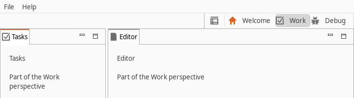

Eclipse 4 Perspective Switcher
A perspective switcher tool control for Eclipse 4 RCP applications.

Update site
https://vogellacompany.github.io/e4-perspective-switcher/
Use it in your application
- Add the update site to your target platform and include the feature org.eclipse.e4.ui.workbench.perspectiveswitcher.feature in your product.
- Add a tool control to a trim bar of your application model that points to the switcher:
bundleclass://org.eclipse.e4.ui.workbench.perspectiveswitcher/org.eclipse.e4.ui.workbench.perspectiveswitcher.tools.PerspectiveSwitcherSwtTrim
Current build
2.0.0.202610161019
This site carries the newest build only. Older builds are attached as repository archives to the GitHub releases.